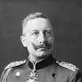

Kemal Atatürk, 1. Dünya Savaşı'nda Osmanlı İmparatorluğu'nun askeri liderlerinden biri olarak önemli bir rol oynamıştır. 1. Dünya Savaşı, 1914-1918 yılları arasında, Osmanlı İmparatorluğu'nun İttifak Devletleri'ne katılmasıyla başladı ve bu savaş, Atatürk'ün askeri kariyerinin şekillenmesinde de kritik bir dönemdi. Atatürk'ün 1. Dünya Savaşı'ndaki önemli katkıları şunlardır:
Çanakkale Cephesi (1915-1916)
Atatürk'ün en çok tanınan askeri başarısı, Çanakkale Cephesi'ndeki komutanlığıdır. 1915 yılında, İtilaf Devletleri, Osmanlı İmparatorluğu'nu savaş dışında bırakmak için Çanakkale Boğazı'nı geçmeye çalıştılar. Atatürk, 19. Tümen Komutanı olarak, Anafartalar'da ve diğer kritik bölgelerde büyük bir direniş gösterdi. Özellikle 18 Mart ve 25 Nisan 1915 tarihlerindeki deniz ve kara saldırılarında gösterdiği liderlik, onu Osmanlı İmparatorluğu'nun kahramanlarından biri yaptı. Atatürk, "Ben size taarruzu değil, ölmeyi emrediyorum" gibi ünlü sözleriyle, askerlerine cesaret verdi ve bu direniş, Osmanlı İmparatorluğu'nun Çanakkale'deki zaferiyle sonuçlandı. Çanakkale Zaferi, hem Osmanlı İmparatorluğu için hem de Türk milleti için tarihi bir dönüm noktasıydı.
Suriye ve Filistin Cephesi
Çanakkale'deki başarısının ardından Atatürk, 1916 yılında Suriye ve Filistin Cephesi'nde de görev yaptı. Burada, Osmanlı'nın savunma hattını korumak ve İngilizlerle mücadele etmek için önemli görevler üstlendi. Suriye ve Filistin Cephesi'nde başarı sağlanamasa da, Atatürk'ün stratejik düşünme ve liderlik becerileri burada da kendini gösterdi.
Mustafa Kemal Paşa'nın Askeri Yetkinliği ve Stratejileri
Atatürk, 1. Dünya Savaşı'nda sadece cephede değil, aynı zamanda askeri strateji ve planlama konusunda da yetkinlik gösterdi. Modern savaş tekniklerini ve askerî örgütlenme biçimlerini, geleneksel Osmanlı ordusunun sistemine entegre etmeye çalıştı. Bu özellikleri, onun sonraları Türk Kurtuluş Savaşı'nda ve Türkiye Cumhuriyeti'nin kuruluşunda da başarılı bir lider olmasına zemin hazırladı.
Savaş Sonrası ve Kurtuluş Savaşı
Dünya Savaşı sonunda Osmanlı İmparatorluğu'nun ağır mağlubiyeti, Atatürk'ün önderliğindeTürk milletinin bağımsızlık mücadelesine girişmesine neden oldu. 1918'de savaş sona erdiğinde, Osmanlı İmparatorluğu çok büyük toprak kayıpları yaşamış ve işgal altına girmişti. Atatürk, Mondros Mütarekesi'nin imzalanmasının ardından, Türk milletinin bağımsızlık mücadelesini başlatacak ve Kurtuluş Savaşı'nın önderi olacaktı. Sonuç olarak, 1. Dünya Savaşı, Atatürk’ün askeri liderlik vasfını pekiştirdiği ve sonraki yıllarda Türk milletinin bağımsızlık mücadelesine ilham veren bir dönemdir. Çanakkale Cephesi, onun askeri dehasının ve liderlik kabiliyetinin zirveye çıktığı bir anıdır.
Savaşın Başlamasında Rolü
Kaiser II. Wilhelm, 1. Dünya Savaşı'nın patlak vermesinde önemli bir rol oynamıştır. O dönemde Almanya, Avrupa'da güçlü bir askeri güçtü ve Wilhelm'in dış politikası, savaşa giden yolu hızlandıran bir etki yaratmıştır. Askeri Güç ve Dış Politika: Wilhelm, Almanya'nın askeri gücünü ve sanayi kapasitesini artırmayı hedeflemişti. Almanya'nın dünya çapında daha fazla etki kurmak istemesi, özellikle deniz gücü artırılmaya çalışılırken, Birleşik Krallık ile gerilim yarattı. Bu durum, Avrupa'daki diğer büyük güçlerle (Fransa, Rusya, Birleşik Krallık) çatışma ortamını körükledi. "Weltpolitik" (Dünya Politikası): Wilhelm, Almanya'nın küresel bir güç haline gelmesi için Weltpolitik adı verilen bir dış politika izledi. Bu politika, Almanya'nın sömürgecilik alanında da daha fazla yer edinmesini amaçlıyordu. Ancak, bu yaklaşım, özellikle Britanya ve Fransa ile gerilimlere yol açtı.
I. Dünya Savaşı'nın Başlamasında Kritik Rol
Kaiser II. Wilhelm'in liderliği, 1. Dünya Savaşı'nın patlak vermesinde doğrudan etkili oldu. 28 Haziran 1914'te Avusturya-Macaristan Arşidüklüğü Franz Ferdinand'a yapılan suikast, Avrupa'da savaşın fitilini ateşledi. Bu suikast sonrası, Wilhelm’in Almanya olarak Avusturya-Macaristan'a güçlü bir destek sözü vermesi, savaşı hızlandırdı. "Blankoscheck" (Boş Çek): Suikast sonrası Avusturya-Macaristan'a Almanya'nın desteğini veren Kaiser II. Wilhelm, Avusturya'ya "blankoscheck" (boş çek) verdi, yani Avusturya-Macaristan'a her türlü desteği sağlayacaklarını söyledi. Bu, Rusya ve diğer Avrupa güçlerini karşı karşıya getirdi ve savaşın çıkmasına neden oldu.
Savaş Sırasındaki Rolü
Wilhelm, savaşın başlangıcından itibaren Almanya'nın başındaki lider olarak, askeri ve diplomatik stratejilerin şekillendirilmesinde önemli bir figür oldu. Ancak, savaş ilerledikçe askeri kararlar ve dış politikadaki hatalar, Almanya'nın aleyhine işledi. Cephe Hattındaki Durum: Wilhelm'in savaş sırasında askeri yönetimi ve cephelerdeki liderliği, birçok kritik durumda yanlış stratejilere yol açtı. Özellikle Batı Cephesi'nde yapılan hatalar, Almanya'nın savaşta üstünlük kurmasını zorlaştırdı. Diplomatik İzolasyon: Almanya'nın, özellikle Wilhelm'in yönetimi altında, dış politikasında izlediği sert ve agresif tutum, sonunda ülkeyi izole etti. Almanya, 1917'de Amerika'nın savaşa katılmasıyla daha da zor bir duruma düştü.
Savaşın Sonu ve Tahttan Feragat
Savaşın sonunda Almanya büyük bir mağlubiyet yaşadı. II. Wilhelm, Almanya'nın savaştan çekilmesi ve mağlup olmasının ardından, 9 Kasım 1918'de tahtını bıraktı ve Hollanda'ya sürgüne gitmek zorunda kaldı. Versailles Antlaşması: Almanya, 1919'da Versailles Antlaşması'nı imzalamak zorunda kaldı. Bu antlaşma, Almanya'ya ağır şartlar dayattı, savaş tazminatları ve toprak kayıpları öngörülüyordu. Bu antlaşma, Almanya'nın ekonomik ve sosyal açıdan büyük bir yıkım yaşamasına yol açtı.

Winston Churchill, 1. Dünya Savaşı sırasında Birleşik Krallık'ta önemli bir askeri ve siyasi figürdü. Savaşın başından itibaren kritik roller üstlenmiş ve bazı kararları savaşın gidişatını etkilemiştir. Churchill'in 1. Dünya Savaşı'ndaki rolünü daha iyi anlamak için onun görev aldığı bazı önemli olaylar ve kararlar üzerinden bir değerlendirme yapabiliriz.
Savaşın Başında Siyasi Rolü ve Deniz Bakanı Görevi (1911-1915)
Churchill, 1911-1915 yılları arasında Birleşik Krallık'ın Deniz Bakanı olarak görev yaptı. Bu dönemde, deniz gücünün modernizasyonuna büyük önem verdi ve donanmayı güçlendirme çabalarına öncülük etti. Ancak, bu dönemdeki bazı kararları, özellikle Çanakkale Seferi'nde aldığı stratejik kararlar nedeniyle eleştirildi. Donanmanın Güçlendirilmesi: Churchill, Kraliyet Donanması'nın modernizasyonuna öncülük etti. Özellikle, denizaltılara ve yeni gemilere yatırım yaparak İngiltere'nin deniz üstünlüğünü pekiştirmeye çalıştı. Bu strateji, Birleşik Krallık'ın savaşın ilerleyen dönemlerinde deniz gücünü etkili bir şekilde kullanmasına yardımcı oldu.
Çanakkale Seferi (1915) ve Savaşın İlk Büyük Hatası
Churchill, 1. Dünya Savaşı'nda en çok Çanakkale Seferi ile anılır. Bu sefer, 1915'te Osmanlı İmparatorluğu'na karşı yapılan büyük bir deniz ve kara saldırısıydı. Churchill, Donanma Bakanı olarak bu harekâtın başını çekti ve Osmanlı İmparatorluğu'nu savaş dışında bırakmayı amaçladı. Ancak, seferin başarısız olması, hem İngiltere'nin hem de onun askeri kariyerinin önemli bir dönüm noktası oldu. Çanakkale'nin Başarısızlığı: Çanakkale Seferi, özellikle Osmanlı kuvvetlerinin direnişi ve Türk askerlerinin üstün taktikleri karşısında başarısız oldu. Çanakkale'deki başarısızlık, milyonlarca dolar harcanmasına ve çok sayıda kayba yol açtı. Bu durum, Churchill'in savaş yönetimindeki yetkinliği konusunda büyük eleştirilere yol açtı. İstifa ve Savaşın Sonrası: Çanakkale'deki başarısızlığın ardından, Churchill istifa etmek zorunda kaldı. Savaşın bu kısmındaki hatalarından dolayı büyük eleştiriler aldı ve kısa bir süre sonra hükümetten uzaklaştı. Ancak, bu olay, onun askeri kariyerinin önemli bir dönüm noktasıydı.